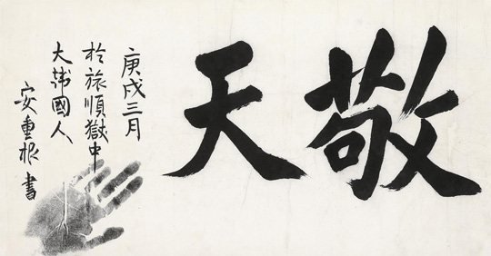
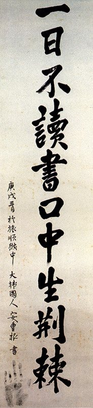
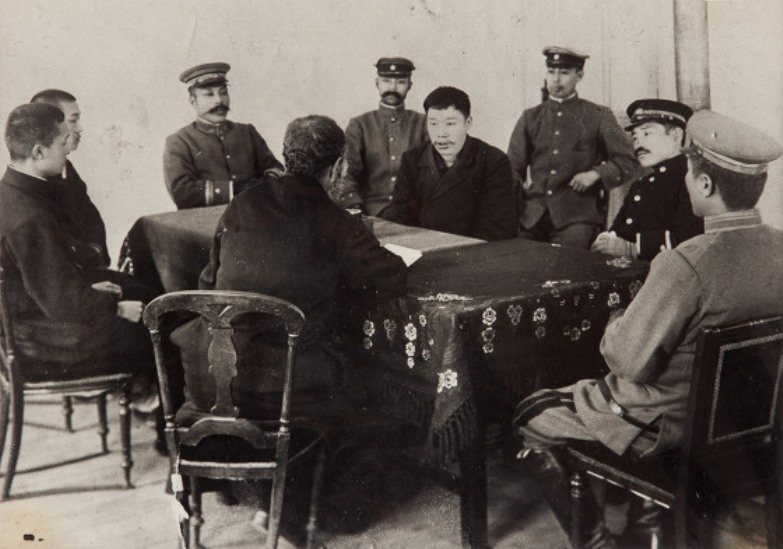
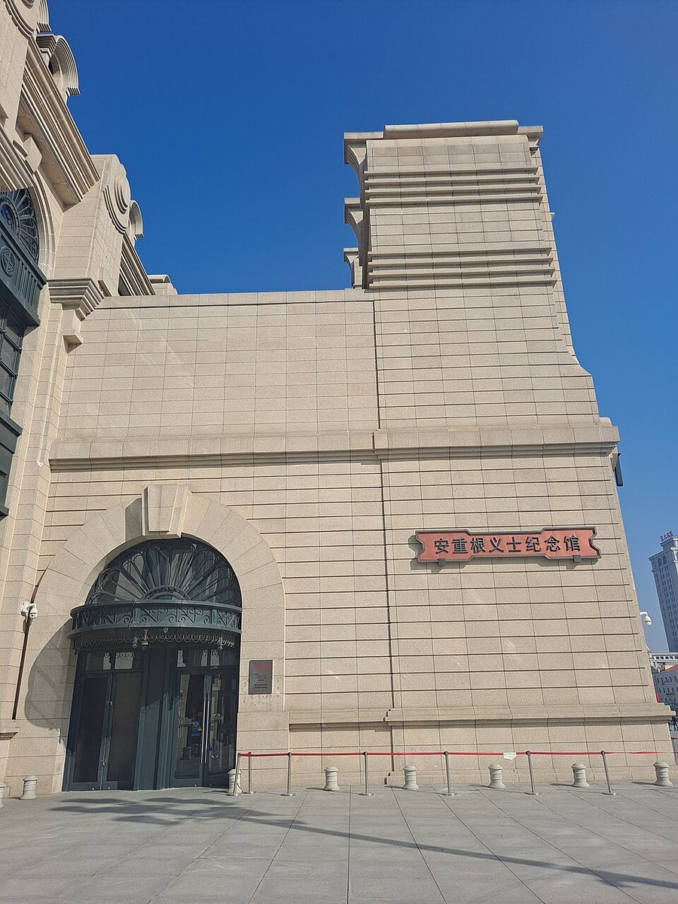

이름
왜 이 사람인가
생애
1879년 황해도 해주에서 태어났어요. 아명은 응칠(應七) — 가슴과 배의 일곱 점 때문이었다고 하죠. 천주교 집안에서 토마스라는 세례명을 받았고, 젊어서는 학교(삼흥학교·돈의학교)를 세워 인재를 기르는 교육 운동에 힘썼어요. 총을 들기 전에 먼저 분필을 들었던 사람이에요.
1905년 을사늑약, 1907년 고종 퇴위와 군대 해산 — 나라가 무너져 가자 그는 연해주로 망명해 의병(대한의군)에 투신했어요. 1909년 봄에는 동지 11명과 왼손 넷째 손가락을 끊어 '대한독립'을 혈서로 쓰는 단지동맹을 맺죠. 그 손도장이 찍힌 유묵들이 지금도 남아 있어요.
1909년 10월 26일 아침 하얼빈역 — 러시아 재무장관을 만나러 온 이토 히로부미를 향해 세 발을 명중시켰어요. 그 자리에서 러시아 헌병에게 체포되며 그는 에스페란토식 발음으로 '코레아 우라(대한 만세)'를 세 번 외쳤다고 기록돼 있어요.
일본은 그를 뤼순의 일본 법정에 세웠어요. 그는 다섯 달의 수감과 여섯 차례 공판 내내 일관되게 주장했죠 — '나는 개인 자격의 암살자가 아니라 대한의군 참모중장으로서 적장을 처단한 것이니 전쟁 포로로 대우하라.' 그리고 이토의 죄 15개조를 낭독해 재판을 일본 침략에 대한 재판으로 뒤집었어요. 일본인 간수들마저 그의 인품에 감복해 글씨를 청할 정도였죠.
1910년 3월 26일, 31세로 순국했어요. 어머니 조마리아가 보냈다고 전해지는 말 — '네가 항소를 한다면 그것은 목숨을 구걸하는 일이다' — 과 함께, 그는 항소를 포기하고 마지막 날까지 『동양평화론』을 썼습니다. 미완의 원고와 200여 점의 유묵, 그리고 아직 찾지 못한 유해가 남았어요.
자료로 보기 — 유묵·사진




남긴 말
연표
- 1879황해도 해주 출생
- 1906삼흥학교 설립 — 교육 구국 운동
- 1907연해주 망명 · 대한의군 참여
- 1909.2단지동맹 — 혈서 '대한독립'
- 1909.10.26하얼빈역 의거
- 1910.3.26뤼순에서 순국 (31세) · 『동양평화론』 미완
- 1962건국훈장 대한민국장 추서 — 유해는 아직 미귀환
생애의 길 — 해주에서 뤼순까지 🗺️
더 깊이 (고등·일반)
의거인가 테러인가 — 국제법의 논점
동양평화론 — 사형수가 쓴 평화의 설계도
지바 도시치 — 적국 간수의 평생 공양
토마스 안중근 — 교회와의 긴 화해
끝나지 않은 귀향 — 유해 발굴 문제
사람의 그물 — 함께 읽을 인물
더 공부하기 — 여기서 출발하세요
- 안중근 평전 ↗ · 김삼웅생애 전체를 다룬 대표적 평전 — 입문으로 좋아요.
- 하얼빈 ↗ · 김훈 (소설)의거 전후 며칠을 그린 장편소설 — 영웅담이 아니라 청년의 가난한 몸과 결심을 따라가는, 문학으로 읽는 안중근의 대표작이에요. (영화 〈하얼빈〉과는 별개 작품)
- 동양평화론 ↗ · 안중근 (여러 번역본)본인의 글을 직접 읽는 것이 최고의 출발점 — 얇지만 깊어요.
- 내 마음의 안중근 ↗ · 사이토 타이켄간수 지바 도시치의 이야기 — 일본인의 눈으로 본 안중근.
- 안중근 신문조서·공판 기록국사편찬위원회 한국사데이터베이스에서 '안중근'으로 검색 — 법정의 목소리를 원문으로.
- 안중근 유묵 200여 점안중근의사기념관 소장·전시 — 보물로 지정된 글씨들.
- 영화 〈영웅〉 (2022) ↗🟢 뮤지컬 원작 — 공식 2차 예고편(CJ ENM)으로 분위기를 먼저 만나 보세요.
- 영화 〈하얼빈〉 (2024) ↗🟡 거사 전의 긴장을 그린 첩보극 톤 — 공식 메인 예고편(CJ ENM). 부모와 함께.
- 안중근의사기념관 (서울 남산)유묵·공판 기록·동양평화론 — 이 페이지의 실물판.
- 효창공원 삼의사 묘역 (서울)비어 있는 그의 무덤 — '끝나지 않은 귀향'을 눈으로.